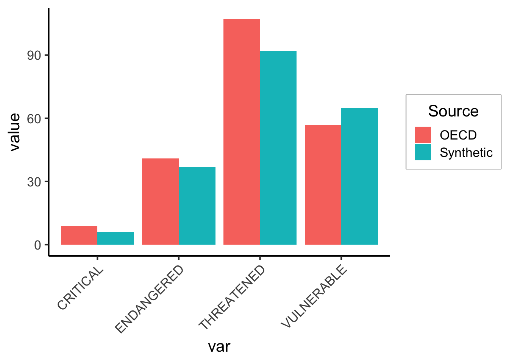

source("../../_globals.r")Generating Synthetic Microdata from Aggregated Count Data
General
Macro-Level vs. Micro-Level Data
Before we look at how to “decompose” the macro-level OECD dataset we have into micro-level data on individual animal types, let’s motivate why we have to do all this work in the first place!
Imagine that you are the prime minister of a tiny country, which has only 10 citizens, who are split across two provinces (3 citizens live in Province A, 4 live in Province B, and the remaining 3 live in Province C). You’re hoping to study the healthiness of the people in your country. You would like to have a dataset containing 10 observations, one for each citizen in your country, but the data was collected anonymously, to protect each citizen’s privacy.
This means that, instead of having a dataset with 10 rows, one for each citizen, instead you have the following dataset which contains counts of various features across the three provinces:
library(tidyverse)
sick_df <- tribble(
~Province, ~Total_Population, ~Fever, ~High_Fever, ~Cough,
"A", 3, 2, 1, 1,
"B", 4, 1, 1, 2,
"C", 3, 1, 1, 3,
)
sick_df| Province | Total_Population | Fever | High_Fever | Cough |
|---|---|---|---|---|
| A | 3 | 2 | 1 | 1 |
| B | 4 | 1 | 1 | 2 |
| C | 3 | 1 | 1 | 3 |
Now, think about whether (or how) you could potentially decompose this aggregated count data down into individual observations of each citizen…
The issue in trying to do this is: we don’t have any information on whether individual people in each province might have multiple conditions! For example, we know that High_Fever is a more severe version of Fever, so that all citizens who have a high fever also have a fever, but not all citizens who have a fever have a high fever.
Separately, a citizen might have both a cough and a fever, or just a cough, or just a fever, or none of these (they may be perfectly healthy).
Because we don’t have this info, sadly, there are many possible datasets which could have produced this aggregate data. For example, the following individual data could have produced it:
Code
micro_df_1 <- tribble(
~citizen_id, ~Province, ~Fever, ~High_Fever, ~Cough,
1, 'A', 1, 1, 1,
2, 'A', 1, 0, 0,
3, 'A', 0, 0, 0,
4, 'B', 1, 1, 1,
5, 'B', 0, 0, 1,
6, 'B', 0, 0, 0,
7, 'B', 0, 0, 0,
8, 'C', 1, 1, 1,
9, 'C', 0, 0, 1,
10, 'C', 0, 0, 1
)
micro_df_1| citizen_id | Province | Fever | High_Fever | Cough |
|---|---|---|---|---|
| 1 | A | 1 | 1 | 1 |
| 2 | A | 1 | 0 | 0 |
| 3 | A | 0 | 0 | 0 |
| 4 | B | 1 | 1 | 1 |
| 5 | B | 0 | 0 | 1 |
| 6 | B | 0 | 0 | 0 |
| 7 | B | 0 | 0 | 0 |
| 8 | C | 1 | 1 | 1 |
| 9 | C | 0 | 0 | 1 |
| 10 | C | 0 | 0 | 1 |
Which we can see by grouping and summing:
micro_df_1 |>
group_by(Province) |>
summarize(
n(), sum(Fever), sum(High_Fever), sum(Cough)
)| Province | n() | sum(Fever) | sum(High_Fever) | sum(Cough) |
|---|---|---|---|---|
| A | 3 | 2 | 1 | 1 |
| B | 4 | 1 | 1 | 2 |
| C | 3 | 1 | 1 | 3 |
(This is exactly the macro-level dataset was saw above)
But this totally different micro-level dataset could also have generated the exact same macro-level count dataset:
Code
micro_df_2 <- tribble(
~citizen_id, ~Province, ~Fever, ~High_Fever, ~Cough,
1, 'A', 1, 1, 0,
2, 'A', 1, 0, 0,
3, 'A', 0, 0, 1,
4, 'B', 1, 1, 0,
5, 'B', 0, 0, 1,
6, 'B', 0, 0, 1,
7, 'B', 0, 0, 0,
8, 'C', 1, 1, 1,
9, 'C', 0, 0, 1,
10, 'C', 0, 0, 1
)
micro_df_2| citizen_id | Province | Fever | High_Fever | Cough |
|---|---|---|---|---|
| 1 | A | 1 | 1 | 0 |
| 2 | A | 1 | 0 | 0 |
| 3 | A | 0 | 0 | 1 |
| 4 | B | 1 | 1 | 0 |
| 5 | B | 0 | 0 | 1 |
| 6 | B | 0 | 0 | 1 |
| 7 | B | 0 | 0 | 0 |
| 8 | C | 1 | 1 | 1 |
| 9 | C | 0 | 0 | 1 |
| 10 | C | 0 | 0 | 1 |
Which we can see generates the same data, by applying the same aggregation we applied to Micro-Level Dataset #1:
micro_df_2 |>
group_by(Province) |>
summarize(
n(), sum(Fever), sum(High_Fever), sum(Cough)
)| Province | n() | sum(Fever) | sum(High_Fever) | sum(Cough) |
|---|---|---|---|---|
| A | 3 | 2 | 1 | 1 |
| B | 4 | 1 | 1 | 2 |
| C | 3 | 1 | 1 | 3 |
Hopefully that helps to indicate the issue! Without knowing the specific joint or conditional probabilities, we don’t have enough information to fully know the underlying micro-level data.
Also, notice how the two micro-datasets are not equivalent in the context of knowing how healthy the population is 😱 in Micro-Level Dataset #2, 9 out of 10 citizens have an illness (only one person, the citizen with id 7, is fully healthy), whereas in Micro-Level Dataset #1 only 7 out of 10 citizens have an illness (the citizens with ids 3, 6, and 7 are fully healthy). We can see this using a bit of code, to extract just the fully-healthy citizens from each dataset:
healthy_1 <- micro_df_1 |> filter(
(Fever == 0) & (High_Fever == 0) & (Cough == 0)
)
healthy_1| citizen_id | Province | Fever | High_Fever | Cough |
|---|---|---|---|---|
| 3 | A | 0 | 0 | 0 |
| 6 | B | 0 | 0 | 0 |
| 7 | B | 0 | 0 | 0 |
healthy_2 <- micro_df_2 |> filter(
(Fever == 0) & (High_Fever == 0) & (Cough == 0)
)
healthy_2| citizen_id | Province | Fever | High_Fever | Cough |
|---|---|---|---|---|
| 7 | B | 0 | 0 | 0 |
However, if we run into this problem in the real world, all hope is not lost! We know that some micro-level datasets are impossible: for example, we know that a dataset where everyone has all the illnesses would not aggregate to our macro-level data. So, we could construct a synthetic dataset as something like an average over all of the possible micro-level datasets that could be “underneath” the macro-level dataset we actually observed. I’ll call this the statistically-principled-and-possible-but-brutally-difficult approach, though, because this gets us into the territory of what is called Ecological Inference, and statistical models for doing this get very complicated very quickly (requiring big scary-looking textbooks).
So instead, in the rest of the writeup, we’ll just look at how to construct one such “possible” synthetic dataset, in a way that is smarter than the greedy approach we used to construct Micro-Level Dataset #1 above, but not as smart as the full-on statistically-principled approach.
Macro-Level Count Data
So, say you have a dataset that looks like the following, for example, obtained from the OECD’s Data Explorer portal1:
library(tidyverse)
macro_df <- read_csv("assets/wild_life_cleaned.csv")
macro_df |> head()| IUCN | IUCN Category | SPEC | Species | COU | Country | Value |
|---|---|---|---|---|---|---|
| TOT_KNOWN | Total number of known species | MAMMAL | Mammals | AUS | Australia | 377 |
| ENDANGERED | Number of endangered species | MAMMAL | Mammals | AUS | Australia | 41 |
| CRITICAL | Number of critically endangered species | MAMMAL | Mammals | AUS | Australia | 9 |
| VULNERABLE | Number of vulnerable species | MAMMAL | Mammals | AUS | Australia | 57 |
| THREATENED | Total number of threatened species | MAMMAL | Mammals | AUS | Australia | 107 |
| TOT_KNOWN | Total number of known species | MAMMAL | Mammals | AUT | Austria | 104 |
Once we transform it from long to wide format, we’ll be able to see how this dataset provides data on (country-species) pairs (e.g., Mammals in Australia), not on individual types of animals (e.g., Kangaroos in Australia):
wide_df <- macro_df |>
select(-c(`IUCN Category`, COU, SPEC)) |>
pivot_wider(
names_from = IUCN,
values_from = Value
) |>
select(-c(THREAT_PERCENT))
wide_df |> head()| Species | Country | TOT_KNOWN | ENDANGERED | CRITICAL | VULNERABLE | THREATENED |
|---|---|---|---|---|---|---|
| Mammals | Australia | 377 | 41 | 9 | 57 | 107 |
| Mammals | Austria | 104 | 6 | 4 | 17 | 27 |
| Mammals | Belgium | 84 | 2 | 4 | 12 | 18 |
| Mammals | Canada | 222 | 11 | 11 | 33 | 55 |
| Mammals | Czech Republic | 92 | 1 | 10 | 4 | 15 |
| Mammals | Denmark | 71 | 2 | 1 | 6 | 9 |
Although some methods like Decision Trees can handle both classification and regression tasks, there are other methods like ARM where using this type of count data can be difficult, since most of the methods and libraries only support 0/1 binary matrices.
But, if you think about it for long enough, you’ll realize that we could use this aggregated count data to generate simulated versions of the underlying microdata.
For example: notice how this dataset tells us that there are 377 known mammals in Australia, and that of these 377,
- 41 are Endangered
- 9 are Critical,
- 57 are Vulnerable, and
- 107 are Threatened.
It relates back to exercises we did early in DSAN 5100, actually: our dataset here provides us with marginal frequencies, but does not give us joint frequencies or conditional frequencies. For example, we don’t know how many mammals in Australia are both threatened and critical, even though it seems like the number of threatened species is greater than the number of critical species, at least in the rows we can see above.
If we did have all of this data, then we could just mathematically derive the number of animals in each possible combination of categories: for example, the exact number of mammals in Canada which are threatened and vulnerable but not endangered or critical. However, since we don’t know the number of animals in all possible categories (combinations of the four features), we’re in the same situation as in the simplified example above. So, we’ll have to construct a synthetic dataset, in this case a micro-level dataset of individual animal types which matches the count data in the existing macro-level dataset as best as possible.
Approximating the Micro-Level Data
The key insight is just recognizing that, since we have counts as well as totals in each row, we can construct probabilities of a given animal type having a given property (using the naïve definition of probability, and assuming that each property is independent, which is a terrible assumption in this case, but getting rid of this assumption brings us back into scary math world).
For example: looking at the four bullet points above, relative to the fact that there are 377 total types of mammals in Australia, we can generate a set of probabilities that a given (arbitrarily-chosen) animal type in Australia has each of these properties. Letting \(S\) be a Random Variable representing an animal’s Species and \(C\) a Random Variable representing an animal’s Country, and then letting \(\texttt{M}\) stand for “Mammals” and \(\texttt{A}\) stand for “Australia”:
\[ \begin{align*} \Pr(\text{Endangered} \mid S = \texttt{M}, C = \texttt{A}) = \frac{41}{377} &\approx 0.109 \\ \Pr(\text{Critical} \mid S = \texttt{M}, C = \texttt{A}) = \frac{9}{377} &\approx 0.024 \\ \Pr(\text{Vulnerable} \mid S = \texttt{M}, C = \texttt{A}) = \frac{57}{377} &\approx 0.151 \\ \Pr(\text{Threatened} \mid S = \texttt{M}, C = \texttt{A}) = \frac{107}{377} &\approx 0.284 \end{align*} \]
Which means that we could now generate a dataset of individual animals which would approximate (under our very questionable assumptions of independence, at least) the aggregate information we have. For this specific example of mammals in Australia, then, we could write code to generate data for mammals in Australia like the following:
library(Rlab)
N <- 377
p_endangered <- 0.109
p_critical <- 0.024
p_vulnerable <- 0.151
p_threat <- 0.284
synth_animals <- tibble(
animal_id = seq(1, N),
endangered = rbern(N, p_endangered),
critical = rbern(N, p_critical),
vulnerable = rbern(N, p_vulnerable),
threat = rbern(N, p_threat)
)
synth_animals |> head()| animal_id | endangered | critical | vulnerable | threat |
|---|---|---|---|---|
| 1 | 0 | 0 | 0 | 1 |
| 2 | 0 | 0 | 1 | 0 |
| 3 | 0 | 0 | 0 | 0 |
| 4 | 0 | 0 | 0 | 1 |
| 5 | 1 | 0 | 0 | 0 |
| 6 | 0 | 0 | 0 | 0 |
And now we can aggregate these individual “coin flips” to obtain counts:
agg_animals <- synth_animals |>
summarize(
ENDANGERED = sum(endangered),
CRITICAL = sum(critical),
VULNERABLE = sum(vulnerable),
THREATENED = sum(threat)
) |>
mutate(
Source = "Synthetic",
Country = "Australia",
Species = "Mammals"
)
agg_animals| ENDANGERED | CRITICAL | VULNERABLE | THREATENED | Source | Country | Species |
|---|---|---|---|---|---|---|
| 37 | 6 | 65 | 92 | Synthetic | Australia | Mammals |
And we can check how closely they match the macro-level count data:
# First the synthetic data
agg_animals_long <- agg_animals |> pivot_longer(
-c(Source, Species, Country),
names_to = "var",
values_to = "value"
)
# Now the actual counts
am_counts_long <- wide_df |>
filter(
(Species == "Mammals") & (Country == "Australia")
) |>
select(-TOT_KNOWN) |>
mutate(Source = "OECD") |>
pivot_longer(
-c(Source, Species, Country),
names_to = "var",
values_to = "value"
)
# And combine
agg_df <- bind_rows(agg_animals_long, am_counts_long)
agg_df| Source | Country | Species | var | value |
|---|---|---|---|---|
| Synthetic | Australia | Mammals | ENDANGERED | 37 |
| Synthetic | Australia | Mammals | CRITICAL | 6 |
| Synthetic | Australia | Mammals | VULNERABLE | 65 |
| Synthetic | Australia | Mammals | THREATENED | 92 |
| OECD | Australia | Mammals | ENDANGERED | 41 |
| OECD | Australia | Mammals | CRITICAL | 9 |
| OECD | Australia | Mammals | VULNERABLE | 57 |
| OECD | Australia | Mammals | THREATENED | 107 |
And visualize this closeness:
ggplot(agg_df, aes(x=var, y=value, fill=Source)) +
geom_bar(stat='identity', position='dodge') +
theme_jjdsan() +
theme(
axis.text.x = element_text(angle = 45, vjust = 1, hjust=1)
)
Not bad! If we repeat this procedure for all (country, species) pairs, we’ll get an individual animal-level (micro-level) dataset! There are several efficient ways to do this, but for the sake of getting it done easily we can just use a loop. However, we’ll have to be careful about missing values.
Footnotes
The thumbnail image for this post is from MIT Sloan’s primer on synthetic data.↩︎